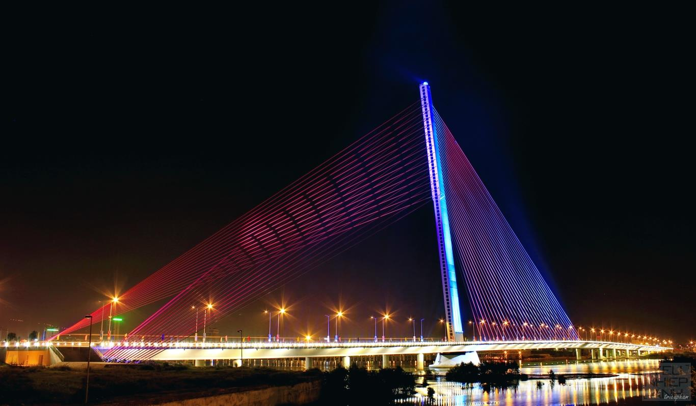

TRAN THI LY BRIDGE
CẦU TRẦN THỊ LÝ

Da Nang’s Tran Thi Ly Bridge is the fifth bridge up the Han River, about 1 km south of the Rong (Dragon) Bridge. The construction of the 1,709 billion VND bridge began in April 2009, and it was officially opened to traffic on 29 March 2013.
With its suspension cables, the bridge forms an upside-down capital “Y” and is intended to look like sails facing towards the East Sea. The bridge has emerged as a must-see feature of Da Nang and an ideal place for visitors who like taking souvenir photos during their stay in the city.
It is believed that the bridge, with the image of sails filled with wind, not only shows charming and gentle characteristics, but also symbolises the city’s aspirations for further development in the future. It has one of the most unique architectural styles of all the bridges in Viet Nam. A striking feature of its design is the 145m-high, backwards-leaning single tower which creates the eye-catching form of the bridge.
The bridge was named after Vietnamese revolutionary activist Tran Thi Ly from Quang Nam Province’s Dien Ban District, whose real name was Tran Thi Nham. She was a member of the Viet Nam People’s Army and the South Viet Nam Liberation Army. During the past two resistance wars, even though Miss Ly was brutally and inhumanely tortured in the prisons of the invaders, she showed her indomitable spirit and admirable bravery, and she never revealed any of Viet Nam’s revolutionary strategies and plans to the enemy.